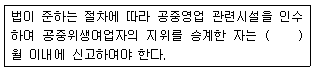

이용사 (2007-04-01 기출문제)
1과목: 임의 과목 구분
1. 조발 시술 전 두발에 물을 충분히 뿌리는 근본적인 이유는?
- 조발을 편하게 하기 위하여
- 두발 손상을 방지하기 위하여
- 두발을 부드럽게 하기 위하여
- 기구의 손상을 방지하기 위하여
(정답률: 84%)

2. 브로스(Brosse) 커트의 일반적인 형은?
- 아동조발
- 여학생 조발
- 스포츠형의 조발
- 롱 스타일의 조발
(정답률: 88%)
3. 염발시 실내온도가 적정할 때 염모제 도포 후 드라이 방법으로 가장 알맞은 것은?
- 자연건조 시킨다.
- 선풍기를 이용하다.
- 자외선 염모실에서 건발한다.
- 드라이 온풍을 이용한다.
(정답률: 68%)
4. 얼굴 마사지용 크림으로 가장 적합한 것은?
- 콜드크림
- 영양크림
- 밀크크림
- 바니싱 크림
(정답률: 72%)
5. 남성 두발의 일반적인 수명은?
- 3 ~ 6개월
- 9 ~ 12개월
- 2 ~ 5년
- 5 ~ 7년
(정답률: 73%)
6. 다음 중 스캘프트리트먼트(scalp treatment)와 가장 관계있는 것은?
- 손톱 손질
- 기구 손질
- 두피 손질
- 브러시 손질
(정답률: 96%)
7. 손가락이나 손바닥으로 피부를 비비거나 문지르는 마시지 방법은?
- 진동법
- 압박법
- 고타법
- 경찰법
(정답률: 75%)
8. 염발시 실내 온도로 가장 알맞은 것은?
- 15 ~ 20℃
- 20 ~ 25℃
- 25 ~30℃
- 30 ~ 35℃
(정답률: 56%)
9. 집게가위 (틴닝가위)를 사용하는 목적은?
- 조발의 편리함
- 정발의 편리함
- 두발 숱의정비
- 간편한 기구의사용
(정답률: 97%)
10. 우리나라 최초의 이용사는?
- 김홍집
- 안종호
- 유길준
- 대원군
(정답률: 93%)
11. 싸인보드(sign board)는 무엇을 의미하는가?
- 정맥, 동맥, 피부
- 정맥, 동맥, 붕대
- 정맥, 동맥, 머리
- 적혈구, 백혈구, 동맥
(정답률: 93%)
12. 면체 시술시 시술자가 위생 마스크를 하는 근본적인 이유는?
- 고객의 건강만을 위해서
- 단정한 모습을 하기 위해서
- 시술자의 침묵을 지키기 위해서
- 호흡기 진환의 감염예방을 위해서
(정답률: 98%)
13. 조발 후 의자에 앉아 있는 상태에서 머리카락을 제거하기위하여 한 번만 샴푸한다면 거품을 얼마나 사용하여야 가장 좋은가?
- 전체 모발량의 약 2배
- 전체 모발량의 약 3배
- 전체 모발량의 약 4배
- 전체 모발량과 같게
(정답률: 64%)
14. 다음 중 원형 탈모증을 가장 바르게 설명한 것은?
- 이마 위쪽 부분의 두발이 빠지는 증세
- 동전처럼 집붕적으로 두발이 빠지는 증세
- 뒷머리 부분의 두발이 빠지는 증세
- 머리 부분 전체의 두발이 빠지는 증세
(정답률: 94%)
15. 다음 중 강질이 연한 가위의 정비시 숫돌면과 가위날 면의 각도로 가장 이상적인 것은?
- 30°
- 35°
- 40°
- 45°
(정답률: 74%)
16. 두발 정발시 아이론의 온도로 가장 적당한 것은?
- 80~90℃
- 90~100℃
- 100~110℃
- 110~130℃
(정답률: 90%)
17. 정발시 머리모양을 만드는데 필요한 이용기구로서 가장 알맞은 것은?
- 핸드 푸셔
- 핸드 드라이어
- 스탠드 드라이어
- 헤어 스티머
(정답률: 94%)
18. E.E.P.를 올바르게 설명한 것은?
- 귀를 가르키는 명칭이다
- 귀, 볼의 명칭이다
- 귀와 귓불의 명칭이다.
- 양쪽 귀를 연결하는 점이다.
(정답률: 85%)
19. 과다한 헤어 드라이로 건조가 심할 때 나타나는 현상은?
- 두피와 모발에 수분이 증발했기 때문에 비듬이 없어진다.
- 두발에 윤기가 없어지고 결모현상이 나타난다.
- 두발이 탈수현상이 되기 때문에 백발이 된다.
- 두발에 신진대사가 활발해 진다.
(정답률: 94%)
20. 다음중 가발의 종류가 아닌 것은?
- 전체 가발
- 부분 가발
- 인조 가발
- 뿌리는 가발
(정답률: 96%)
2과목: 임의 과목 구분
21. 전염병예방법상 제4군 전염병에 속하는 것은?
- 콜레라
- 디프테리아
- 황열
- 말라리아
(정답률: 56%)
22. 다음 중 식중독 세균이 가장 잘 증식할 수 있는 온도 범위는?
- 0~10℃
- 10~20℃
- 18~22℃
- 25~37℃
(정답률: 70%)
23. 평상시 상수의 수도전에서의 적정한 유리잔류 염소량은?
- 0.02ppm 이상
- 0.2ppm 이상
- 0.5ppm 이상
- 0.55ppm 이상
(정답률: 57%)
24. 다음 중 환경위생사업이 아닌 것은?
- 쓰레기처리
- 수질관리
- 구충구서
- 예방접종
(정답률: 72%)
25. 어린 연령층이 집단으로 생활하는 공간에서 가장 쉽게 감염될 수 있는 기생충은?
- 회충
- 구충
- 유구조충
- 요충
(정답률: 72%)
26. 다음 중 일본뇌염의 중간숙주가 되는 것은?
- 돼지
- 쥐
- 소
- 벼룩
(정답률: 62%)
27. 단체 활동을 통한 보건교육방법 중 브레인스토밍(Brainstorming)을 바르게 설명한 것은?
- 여러 사람의 전문가가 자기입장에서 어떤 일정 주제에 관하여 발표하는 방법
- 제한된 연사가 제한된 시간에 발표를 하게하여 짧은 시간과 적은 인원으로 진행하는 방법
- 몇 명의 전문가가 청중 앞에서 자기들끼리 대화를 진행하는 형식으로 사회자가 이야기를 진행 정리해 감으로써 내용을 파악, 이해할 수 있게 하는 방법
- 특별한 문제를 해결하기 위한 단체의 협동적 토의방법으로 문제점을 중심으로 폭넓게 검토하여 구성원 스스로 해결해감으로써 최선책을 강구해가는 방법
(정답률: 83%)
28. 직업병과 직업종사자와 연결이 바르게 된 것은?
- 잠수병-수영선수
- 열사병-비만자
- 고산병-항공기조종사
- 백내장-인쇄공
(정답률: 61%)
29. 다음 중 군집도의 가장 큰 원인은?
- 저기압
- 공기의 이화학적 조성 변화
- 대기오염
- 질소증가
(정답률: 60%)
30. 다음 중 인구증가에 대한 사항으로 맞는 것은?
- 자연증가 = 유입인구 - 유출인구
- 사회증가 = 출생인구 - 사망인구
- 인구증가 = 자연증가 + 사회증가
- 조자연증가 = 유입입구 - 유출인구
(정답률: 63%)
31. 이ㆍ미용실에서 사용하는 수건을 철저하게 소독하지 않았을 때 주로 발생할 수 있는 전염병은?
- 장티푸스
- 트라코마
- 폐스트
- 일본뇌염
(정답률: 67%)
32. 이ㆍ미용업소에서 간염의 전염을 방지하려면 다음 중 어느 기구를 가장 철저히 소독하여야 하는가?
- 수건
- 머리빗
- 면도칼
- 조발용 가위
(정답률: 78%)
33. 다음 중 금속제품 기구소독에 가장 적합하지 않은 것은?
- 알콜
- 역성비누
- 승홍수
- 크레줄수
(정답률: 71%)
34. 100%의 알콜을 사용해서 70%의 알콜 400mL을 만들려고 할 때 알맞은 방법은?
- 물 70mL에 100% 알콜 330mL 혼합
- 물 100mL 100% 알콜 300mL 혼합
- 물 120mL 100% 알콜 280mL 혼합
- 물 330mL 100% 알콜 70mL 혼합
(정답률: 53%)
35. 자외선의 인체에 대한 작용으로 관계가 없는 것은?
- 비타민 D 형성
- 멜라닌 색소 침착
- 체온상승
- 피부암 유발
(정답률: 52%)
36. 이ㆍ미용실 바닥 소독용으로 가장 알맞은 소독 약품은?
- 알콜
- 크레졸
- 생석회
- 승홍수
(정답률: 67%)
37. 다음 중 자비소독에서 자비효과를 높이고자 일반적으로 사용하는 보조제가 아닌 것은?
- 탄산나트륨
- 붕산
- 크레졸액
- 포르말린
(정답률: 38%)
38. 소독에 대한 설명으로 가장 옳은 것은?
- 감염의 위험성을 제거하는 비교적 약한 살균작용이다.
- 세균의 포자까지 사멸한다.
- 아포형성균을 사멸한다.
- 모든 균을 사멸한다.
(정답률: 70%)
39. 고압증기멸균법에 대한 설명으로 옳지 않은 것은?
- 멸균방법이 쉽다.
- 멸균시간이 길다.
- 소독비용이 비교적 저렴하다.
- 놓은 습도에 견딜 수 있는 물품이 주 소독 대상이다.
(정답률: 51%)
40. 조직에 독성이 있어서 인체에는 잘 사용되지 않고 소독제의 평가기중으로 사용되는 것은?
- 알콜
- 크레졸
- 과산화수소
- 석탄산
(정답률: 68%)
3과목: 임의 과목 구분
41. 일반적으로 여드름이나 부스럼이 가장 발생하기 쉬운 계절은?
- 봄
- 여름
- 가을
- 겨울
(정답률: 35%)
42. 일반적으로 많이 사용하고 있는 화장수의 알콜 함유량은?
- 70% 전후
- 10% 전후
- 30% 전후
- 50% 전후
(정답률: 40%)
43. 레인방어막의 역할이 아닌 것은?
- 외부로부터 침입하는 각종 물질을 방어한다.
- 체액이 외부로 새어나가는 것을 방지한다.
- 피부의 색소를 만든다.
- 피부염 유발을 억제한다.
(정답률: 63%)
44. 비타민 C를 섭취하고자 감귤을 많이 먹었더니 손바닥이 특히 황색으로 변했다. 다음 중 무엇 때문인가?
- 카로틴
- 크산틴
- 클로로필
- 산화헤모글로빈
(정답률: 65%)
45. 항산화 비타민과 관계가 가장 적은 것은?
- 바티민A
- 바티민C
- 바티민D
- 바티민E
(정답률: 33%)
46. 다음 중 기초화장품에 해당하는 것은?
- 파운데이션
- 네일에나멜
- 볼연지
- 스킨로션
(정답률: 89%)
47. 뜨거운 물을 피부에 사용할 때 미치는 영향이 아닌 것은?
- 혈관의 확장을 가져온다.
- 분비물의 분비를 촉진한다.
- 모공을 수축시킨다.
- 피부의 긴장감을 떨어뜨린다.
(정답률: 88%)
48. 피부 감각기관 중 피부에 가장 많이 분포되어 있는 것은?
- 온각점
- 통각점
- 촉각점
- 냉각점
(정답률: 69%)
49. 표피의 부속기관이 아닌 것은?
- 손ㆍ발톱
- 유선
- 피지선
- 흉선
(정답률: 39%)
50. 모래알 크기의 각질 세포로서 눈 아래 모공과 땀구멍에 주로 생기는 백색 구진 형태의 질환은?
- 비립종
- 칸디다증
- 매상현관종
- 화염성모반
(정답률: 70%)
51. 이ㆍ미용 기구 소독시의 기준으로 틀린 것은?
- 자외선 소독 - 1cm2당 85㎼이상의 자외선을 10분 이상 쬐어준다
- 석탄산수소독 - 석탄산 3% 수용액에 10분 이상 담가 둔다.
- 크레졸소독 - 클레졸 3%수용액에 10분 이상 담가둔다.
- 열탕소독 - 섭씨 100℃이상의 물속에 10분 이상 끓여준다.
(정답률: 45%)
52. 이ㆍ미용사의 건강진단 결과 마약중독자라고 판정될 때 취할 수 있는 조치사항에 해당하는 것은?
- 자격정지
- 업소폐쇄
- 면허취소
- 1년 이상 업무정지
(정답률: 66%)
53. 이ㆍ미용사가 이ㆍ미용업소 외의 장소에서 이ㆍ미용을 한 때 1차 위반 행정처분기준은?
- 영업정지 1월
- 개선 명령
- 영업정지 10일
- 영업정지 20일
(정답률: 49%)
54. 다음 중 미용사의 청문을 실시하는 경우가 아닌것은?
- 영업의 정지
- 일부 시설의 사용중지
- 영업소 폐쇄명령
- 위생등급결과 이의
(정답률: 71%)
55. 공중위생영업소의 위생관리수준을 향상시키기 위하여 위생서비스 평가계획을 수립하여야 하는 자는?
- 행정자치부장관
- 보건복지부장관
- 시ㆍ도지사
- 위생등급결과 이의
(정답률: 54%)
56. 공중위생관리법상 미용상의 정의로 가장 올바른 것은?
- 손님의 얼굴 등에 손질을 하여 손님의 용모를 아름답고 단전하게 하는 영업
- 손님의 머리를 손질하여 손님의 용모를 아름답고 단정하게 하는 영업
- 손님의 머리카락을 다듬거나 하는 등의 방법으로 손님의 용모를 단정하게 하는 영업
- 손님의 얼굴ㆍ 머리ㆍ 피부 등을 손질하여 손님의 외모를 아름답게 꾸미는 영업
(정답률: 63%)
57. 공중위생감시원의 업무범위에 해당하는 것은?
- 위생서비스 수준의 평가계획 수립
- 공중위생 영업자와 소비자 간의 분쟁조정
- 공중위생 영업소의 위생관리상태의 확인
- 위생서비스 수준의 평가에 따른 포상실시
(정답률: 73%)
58. 공중위생관리법상 위생교육을 받지 아니한 때 부과되는 과태료의 기준은?
- 30만원 이하
- 50만원 이하
- 100만원 이하
- 200만원 이하
(정답률: 64%)
59. ( )안에 적합한 것은?

- 1
- 2
- 3
- 6
(정답률: 64%)
60. 다음 중 공중위생관리법의 궁극적인 목적은?
- 공중위생영업 종사자의 위생 및 건강관리
- 공중위생영업의 위생관리
- 국민의 건강증진에 기여함
- 공중위생영업의 위상향상
(정답률: 60%)